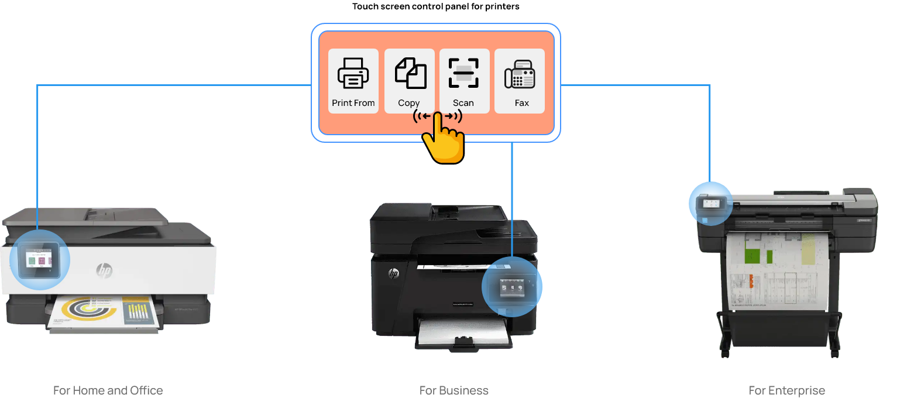
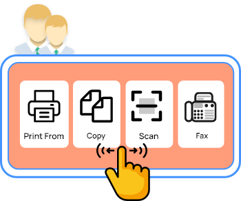
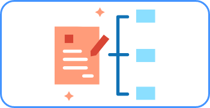
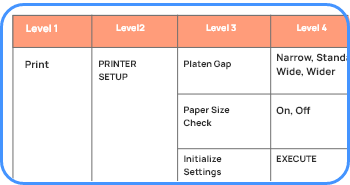
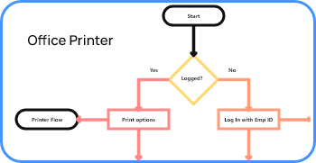
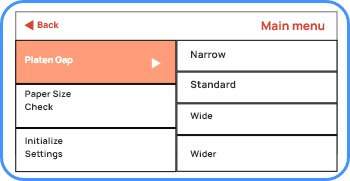
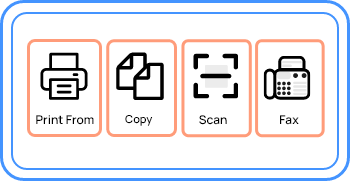

HP Print(Touch screen Control Panels)
Implementing UX workflows for Touch Screen Control Panels present in Printers
Helwett Packard (Print Design)
June to November 2022, Mphasis(Offsite)
Deliver single UX workflow using Axure RP for small, medium and large printer based on the printer Requirements (User stories from Business Analyst), Information Architecture, Task Flows and UI patterns for the control panel touch screen. I was also involved in redesigning taxonomy and Information Architecture, along with interaction design changes for the project.
Printer control Panels(touch screens) small - xs, medium - md and large - xl. The software that controls the hardware is .Net and C#
Ease of use, Information Findability, Task completion success Rate
Business Analyst(SME's), Information Architects, UI Pattern team, Firmware team(SME's)
The release of the printer products are planned ahead before 1 or 2yrs due to the high confidentiality and competition in the market. The UX workflows delivered to firmware team is implemented inside the touch screen control panel of the printers, tested by HP team with real users, the UX workflow is refined based on research and then released to the market by HP in phased manner.
The Problem to solve with this project is, to simplify the user experience for the user while using the touch screen control panel to achieve the daily task like print, scan, copy, fax, maintenance and troubleshooting with ease, quick information finadbility and success in task completion.
HP Print Design Team has a team of User Researchers(SME's), UX designers, Information Architects, UI pattern team(Patterns built in Axure RP) Firmware team, Business Analyst(SME's) and Managers who work on the complete printer design workflows for small(home and offfice), medium(business) and large (enterprise) printers.
Printer Domain knowledge was more important to work on the UX workflows. The parts(Inkjet Printers uses Ink for printing. Laser printer uses drum roll for printing) present in the different types of Printer are crucial to understand printer usage and what features are present in each printer i.e print, copy, tools, fax. The IA for the printers varies based on the printer types.
My role as UX Designer is to understand the requirement, and to colloborate with the above team and build UX workflows using Axure RP and deliver the axure exported html simulation file to Firmware team.


User Research team spends lot of time in testing IA, UI patterns, task success rate, information findability with users and gives feedback on the ux workflow and interaction based on the user's behaviour to larger part of HP team. I refered the research documents like persona, user journey maps, user behaviour, printer type usage details and printer touch screen simulations before starting the UX workflows.

Business Analyst conducted agile workshops and discuss each and every user story with the team before the work starts. I was part of the Agile workshop. After the clarity for the user story is obtained I started working on the UX Flows.

Information Architects team represent the core of HP print design team. They spend hours in refining the Information Architechture and every two weeeks update the IA. Information Architect team has the entire IA in Excel sheet(.xl) with each levels specified in the xl sheet.I often colloborated with IA team and was involved in redesigning taxonomy and Information Architecture, along with interaction design changes for the project.

Task flows are part of the Auxre RP that has to be delivered to the Firmware team. I created the task flows based on the feature(Tools, Maintenance, Troubleshooting) within the Axure RP as separate slide. The Firmware team refer the task flows during the implementation of the workflows.

UI Pattern team create the UI patterns library in Axure RP based on the research conducted by user research team, IA and the printer types. Each UI pattern is tested with real users using the protoype simulation built by HP printer team. I refered the IA document and used the UI patterns from pattern library to create UX workflows in Axure RP where each UI pattern is coded for small - xs, medium - md and large - xl printer screen sizes. While exporting the UX workflow from Axure RP, all the three screen sizes are exported for preview and the UI patterns changes based on the screen sizes.

Firmware Team refer the UX workflows to implement the workflow inside the touch screen control panel. Based on the User story, IA, and UI pattern, the UX workflow which I created is exported from Axure RP where all the three screen sizes exported for preview is refered by the Firmware team for implementation and it goes for testing with real users before the printer is released to the market.
Learnt Printer Domain knowledge, UI patterns for printer touch screen, Vast Information Architecture information for printers, Various type of printers and its parts and got trained in Axure RP tool. Little complex when compared to web or mobile design.
Surprised to see the way Information Architecture used in printers due to vast hardware parts and different set of features(i.e.Print, Copy, Fax, Scan) used in small, business and enterprise printers. Redesigning the IA as per the context of usage of Printers by the users was helpful to establish relevant IA and increase information finadbility.
There were more challenges in the project, but the most difficult piece was learning the printer domain, understanding the IA and UI pattern library before working on the UX workflows.
While the whole project was a huge learning experience, I especially loved iterating on designs and reviewing with the core team. This tight feedback loop helped take ambiguity out of the designs, and it felt good to produce designs with the confidence that match the user research insights.